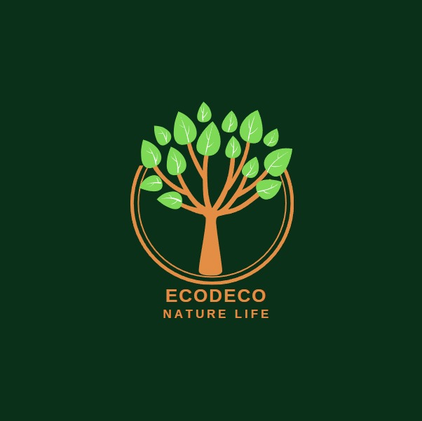

Ecodeco
Mi emprendimientro se llama Ecodeco, el mismo trata sobre la produccion y venta de plantas suculentas, para la "feria de emprendedurismo" de la escuela San Jose. Se realizara la plantacion, cuidado y empaquetado de las mismas.
En cuanto al producto, como antes se indica son plantas suculentas que seran entregadas en macetas de plastico ecologico negro, con una envoltura de plastico reciclado y la imagen de nuestro logo.
La preparacion previa que se hizo para que se desarrollen las plantas fue ubicarlas constantemente a la luz del sol, asegurando regarlas una vez a la semana para no ahogarlas con el agua, mantener ventilacion constante y que no se de un exceso de fertilizante.